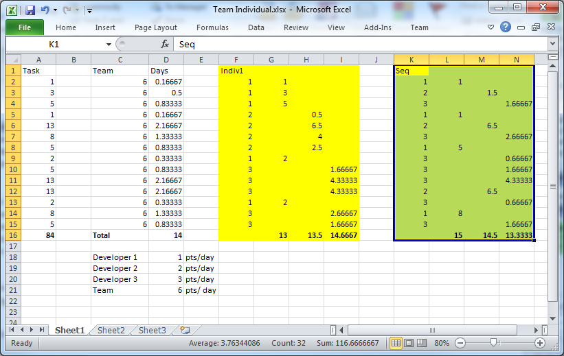

Estimating in Scrum : Breaking away from time based estimates.
Table of Contents
Introduction
I've been having a very interesting discussion at work over estimating in a Scrum based process and thought I'd share some of my thoughts here as I have been having to prove a few things, at least theoretically, to myself and thought this would be worth sharing.
Scrum summary
For those of you not familiar with Scrum as a process, it is basically an agile process based on short periods called Sprints, with all work desribed as Stories within a Product Backlog. The basic process is.
- The backlog is estimated with estiamtes relative to each other, in some kind of non time based unit (this is important!)
- At the start of each sprint the team commits to delivering specific Stories, based on its capacity, known as Velocity (we shall come to that later).
- The Sprint is started and all Stories are split into tasks and estimated in relative sizing, in suchg a way as remaining work can be drawn as a graph through the sprint so that progress can be checked.
- At the end of the Sprint, the total value of the points of the Stories completed in the sprint is the teams velocity, which is used as input into the next sprint planning.
This is a simple description, but then Scrum is fundemantally quite simple. For more information start here.
The Discussion
The discussion we were having involved estimating when team members had different ability and the thread of this discussion went something like this:
Me: "Estimates should stay the same no matter who is doing the task. That way the velocity also represents the experience / skill level of the team as a whole. If for example a team doubled in size with new junior staff, one would expect the velocity to go up, but not to double. So I think the estimate scale should not reflect individual experience."
Colleague: "Estimates should stay the same no matter who is doing the task - I don’t think this is right—the reason being, no matter how abstract your units of measure are, at some point they do equate into tangible periods of time to be measured—otherwise, why keep track of them—and it’s a fact that some people are more productive than others, for various reasons, from more experience to simply being a faster thinker, typist with better hardware, whatever. To not take that into account could constantly thwart your planning efforts."
And this is often the difficulty with adopting Scrum, dropping the planning based on time. I intend to show why dropping the time based approach and specifically dropping the focus on an individual.
Before I start, I would like to state that Scrum is not a silver bullet, even if it works very well for the majority of software development.
Why dropping reference to time in estimates works
Basically I think that: “no matter how abstract your units of measure are, at some point they do equate into tangible periods of time to be measured” is only half of the truth, they are mapped to time with velocity. Without a predictable velocity they are meaningless and with a predictable velocity they can be mapped to a timescale, it is only with a combination of Story Points and Velocity that any planning can be done.
Also: “You need to measure velocity as a whole, no question, but you also need to take into account past history of estimates at the individual developer level—by that I mean actively track and review expected over actuals and adjust accordingly” I agree that adjustments need to be made if on inspection things are being done incorrectly, however, estimates at the individual developer level are irrelevant because the estimate is a consensus, so no one task is estimated by one developer. It may also be the case that two developers work on one task so the actual time taken cannot be attributed to one developer. It is all hard work tracking those kind of metrics as well and, I believe, ultimately unnecessary, which is why I created a spread sheet with an example.

Before I go on I am making some assumptions here about the team:
- The team can estimate well in a relative manner and come to a consensus on the point value of a story.
- The team can organise itself well to manage the sprint backlog and work together, help each other etc.
- There is a strong sense of the team committing to a sprint, rather than individuals.
The spread sheet works out how long a set of estimated stories are going to take a team of 3 developers.
The three developers have a capacity for 3,2 and 1 points per day, a daily individual velocity if you like. The team therefore has a velocity of 6 per day ( a little unrealistic as an example, but useful nevertheless).
So we have a collection of 14 tasks with a Total of 84 points. We have a team velocity of 6, so that’s 14 days’ work to clear the product backlog as it stands. That is generally a simplified method of planning a set of features.
Now if we were to treat it on an individual basis, then the Block Indiv1 shows one way of apportioning the work, with columns G/H/I representing the 3 developers. As you can see, by splitting the work in this way, all developers work the 14 days and all work is done. This is not very realistic as work is rarely apportioned in that way. The Seq block shows a more realistic way, with work being taken from the top, completed and then the next piece of work picked up. Again all come out at roughly 14 days.
Although these examples are very simplistic and quite theoretical, given the assumptions above, I believe this holds true: It does not matter that the individual developers have different abilities, there is no need to change the estimates for an individual developer.
It’s almost like inverting the whole way we estimate and plan:
Traditional:
Given x tasks with estimate y days, the time it takes to deliver is (Sum of y) / no of developers …. Here we have to rely on the estimate for an individual developer. Delivery is based on a sum of values.
Scrum:
Given a team with a velocity of x points / day, the time taken to deliver y points = y/x days …. And in this equation individual developers are irrelevant as are the units of x. Delivery is based on a rate of development.
It puts the focus on the team, not individuals.
Another point worth saying is that Velocity is not just a metric of amount of work done, but a metric of team efficiency (i.e. the rate of change of velocity is a measure of the teams increase in efficiency). If we start adding in other factors such as shifting points we are in danger of masking both of these. Actual work done could be 5 or 8 depending upon the developer, for example. How do we then plan delivery of the backlog based on the fact that the velocity varies and our estimates may need re-estimating based on who is doing the work. Also, if we have a velocity of 8 one week and 13 the next, does this mean the team is more efficient, or does it just mean an individual developer has completed the work he estimated at 13 instead of 8 that another developer may have done.
Summary
I hope this has all makes sense and helps you to see that estimating in a non time based manner is simpler and less prone to problems and that trying to base estimates and plan on individual skills and experience is not only difficult, but unnecessary.